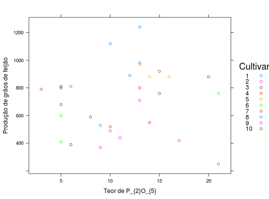
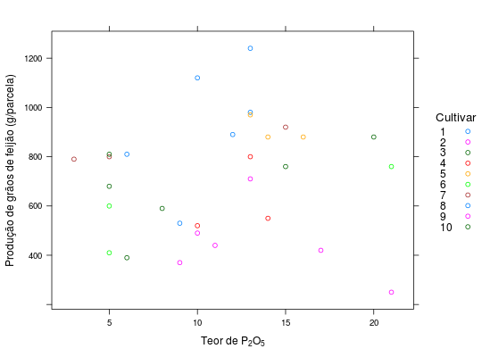
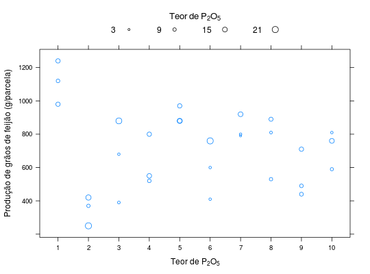

Experimento apresentado por Pereira (1993) referente a avaliação da produção de feijão e teor de \(P_{2}O_{5}\) em cada parcela, cujos dados foram obtidos de 10 cultivares de feijão. Para este experimento, um estudo por regressão deve considerar a produtividade de grãos como variável dependente e o teor como variável independente.
Um data.frame com 30 observações e 4 variáveis, em que
cultblocteorprodRAMALHO et al. (2005), Tabela 13.6, pág. 243 e tabela 13.9, pág. 246.
Pereira, A. F. Emprego de Covariância visando reduzir o efeito da heterogeneidade Ambiental nos Experimentos com a Cultura do Fejoeiro (Phaseolus vulgaris L.) Lavras: UFLA, 1993. 58p. (Dissertação-Mestrado Fitotecnia).
data(RamalhoTb13.6)#> Warning: data set ‘RamalhoTb13.6’ not foundstr(RamalhoTb13.6)#> 'data.frame': 30 obs. of 4 variables: #> $ cult: Factor w/ 10 levels "1","2","3","4",..: 1 2 3 4 5 6 7 8 9 10 ... #> $ bloc: Factor w/ 3 levels "1","2","3": 1 1 1 1 1 1 1 1 1 1 ... #> $ teor: int 13 9 6 14 16 5 5 9 10 8 ... #> $ prod: int 980 370 390 550 880 410 800 530 490 590 ...library(lattice) xyplot(prod ~ teor, groups = cult, data = RamalhoTb13.6, auto.key = list(space = "right", title = "Cultivar"), xlab = "Teor de P_{2}O_{5}", ylab = "Produção de grãos de feijão")xyplot(prod ~ teor, groups = cult, data = RamalhoTb13.6, auto.key = list(space = "right", title = "Cultivar", cex.title = 1.1), xlab = expression("Teor de"~P[2]*O[5]), ylab = "Produção de grãos de feijão (g/parcela)")unit01 <- function(x) { x <- x - min(x) x <- x/max(x) return(x) } cex <- 0.5 + unit01(RamalhoTb13.6$teor) key <- with(RamalhoTb13.6, { v <- round(seq(min(teor), max(teor), length.out = 4), digits = 0) cex <- 0.5 + unit01(v) list(title = expression(Teor~de~P[2]*O[5]), cex.title = 1.1, columns = length(v), text = list(as.character(v)), points = list(cex = cex, pch = 1)) }) xyplot(prod ~ cult, data = RamalhoTb13.6, cex = cex, key = key, xlab = expression("Teor de"~P[2]*O[5]), ylab = "Produção de grãos de feijão (g/parcela)")